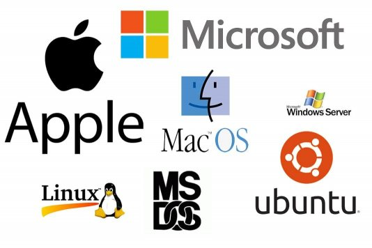
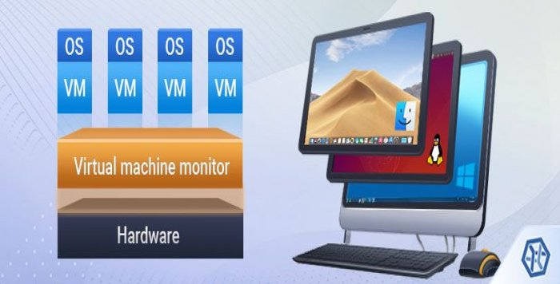
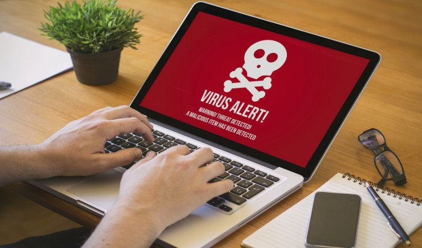

Virtual Machines were a byproduct of computers and what they were capable of achieving. To see and use this website, a person would need a computer and an internet connection. This led to many different companies making it easy for users to operate their computers by making software. Some of these companies were Apple, Microsoft, Linux, and more. The companies' software was used to operate a computer with ease and functionality. This allowed these companies to be categorized as OS software, allowing for the invention of graphical interfaces, applications, programs and much more.
The usage of these OS software was good only on one computer at a time, making it so switching OS would be difficult. This made it hard for people who wanted to do things on Windows and macOS simultaneously as they would have to switch OS. Virtual machines allow the computer to run another operating system within another operating system. For example, you could be using Windows, and with a virtual machine, you could go to Linux, macOS or a different Windows version. It is very nice to switch operating systems using another operating system through software like virtual machine.
The use case of such software can be for many reasons, some being to use different software as one pleases or for more technical reasons. These reasons can be testing applications, viruses, old applications, and more. These are perfect uses of a virtual machine as you can close a virtual machine if anything were to go wrong with a virus or figure out which software allows an old application to run still. These uses allow users to experiment with other OSs, allowing themselves to have still a safe way of experimenting instead of jeopardizing their computer with precious files.
If you are still interested in learning more about virtual machines and why and how we use them then feel free to check out the video below detailing in more detail why we use virtual machines.